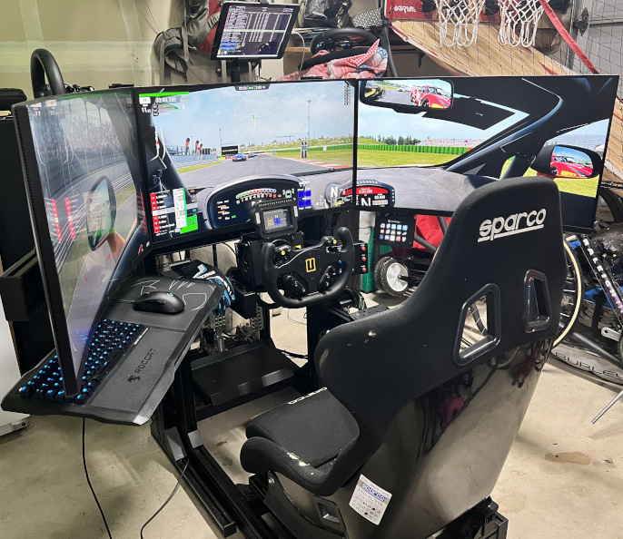
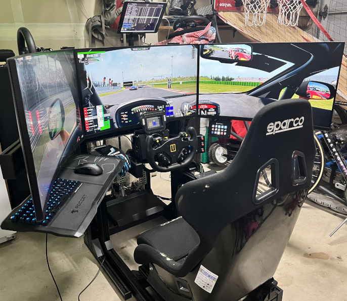

About
West Side Sim-Racing is a Club consisting primarily of North America West members. At our core, we are a group of friends and sim racing enthusiasts that enjoy racing and challenging each other. We strive for a great balance of competitiveness and clean racing. Our members have a wide range of skill, so no matter your experience you'll find a spot on our grid with other people to compete with. If you're looking for a great community in our region, hosting clean and competitive racing, with sim racing enthusiasts well invested in our hobby, you've found it.
Race schedules for our events are based on Pacific Time, with a 7:00pm Qualification start.
Drivers interested in joining our community, be sure to;
- Create an account at simracing.gp and link your Discord account to your sgp profile.
- Join our Discord Server and follow the instructions in our #welcome channel.
Please note, to be accepted into our community you must meet the following criteria.
- North American residents only. We cater to western region time zones for our events.
- Drivers must use wheel / pedals and have a reliable wired internet connection.
Our member rules are simple.
- Treat everyone with respect. Discuss topics but avoid character attacks.
- Limit discussion to racing or sim-racing. No politics or religion.
Event Hosting
West Side Sim-Racing hosts official race events exclusively at simracing.gp.
A dedicated 24 hour ACC practice server is hosted on AWS, named West Side Sim-Racing Club Practice.
Our Race Directors
Saul Boucher
Saul is our original founder and started sim-racing over a decade ago at Race2play and Racedepartment with sims such as GTR2, rFactor, and the Race07 series. He was a Race Director for Racedepartment's US Club and ran a popular assortment of racing for their members. He currently primarily races Assetto Corsa Competizione, but has also raced with Assetto Corsa, Automobolista 2, RaceRoom, and iRacing.
Saul's sim-racing setup consists of a VRS Direct Force Pro Direct Drive wheel base, Heusinkveld Sprint pedals, a Turn R20 wheel paired with an SRC button plate, Sparco R100 Seat, all bolted down to a SimLab GT2 chassis, and a custom base shaker setup. Instead of the popular triple screen setup, he races exclusively in VR using a Valve Index.
Mike Fritz
Mike Fritz is another original founder and drives in real motorsports. Saul relies on Mikes real world motorsport experience, and many aspects of the club have been simulated to be as close as possible to the real thing. Mike primarily races Assetto Corsa Competizione, but also dabbles a little with Project Cars 2 and iRacing.
Mike's sim-racing setup consists of a Simagic Alpha with GT4 wheel, Heusinkveld Sprint pedals, Track Racer TR80 chassis, triple AOC 32" curved monitors, Stream Deck, Racebox button box, and a custom base shaker setup.


Mike Bowen
Mike Bowen is a well respected and active member of our community. He helps with recruiting, decision making, and stewarding. Mike primarily races Assetto Corsa Competizione, but also spends time with other sims including rFactor 2, Automobolista 2, RaceRoom, iRacing, and Project Cars 2.
Mike's sim-racing setup consists of a VRS Direct Force Pro Direct Drive wheel base, Simtrec pedals, Thrustmaster TH8A shifter, Turn R20 wheel with BP2 button plate, Track Racer TR80 chassis, triple 32" 1440p monitors, and a custom base shaker setup.
 
